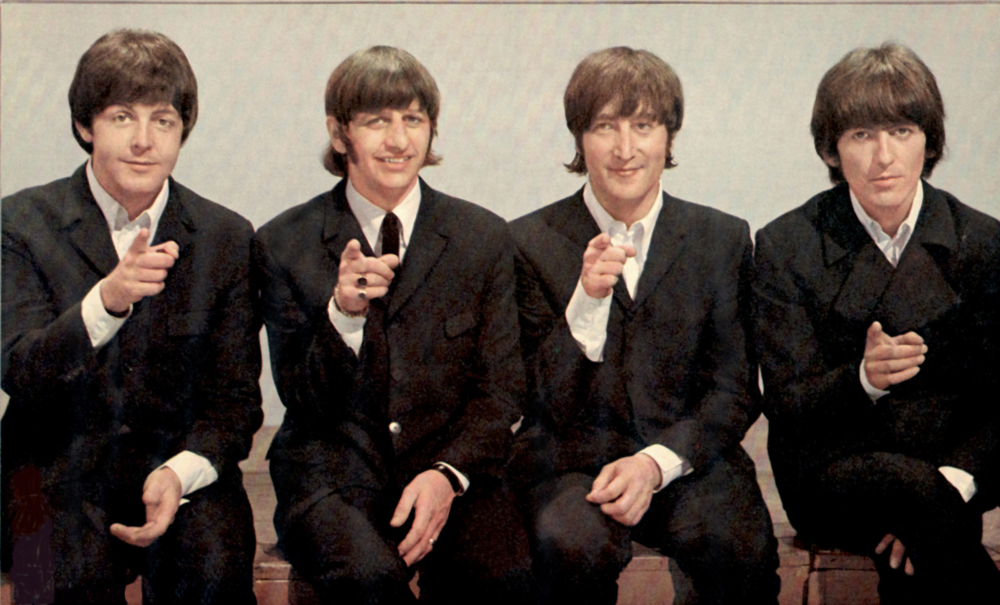

| Albums by Release | |
|---|---|
| Spring 1963 | Please Please Me |
| Fall 1963 | With The Beatles |
| Summer 1964 | A Hard Day's Night |
| Winter 1964 | Beatles For Sale |
| Summer 1965 | Help! |
| Winter 1965 | Rubber Soul |
| Summer 1966 | Revolver |
| Summer 1967 | Sgt Pepper's Lonely Hearts Club Band |
| Fall 1967 | Magical Mystery Tour |
| Fall 1968 | The Beatles (a.k.a. the White Album) |
| Winter 1969 | Yellow Submarine |
| Fall 1969 | Abbey Road |
| Spring 1970 | Let It Be |
